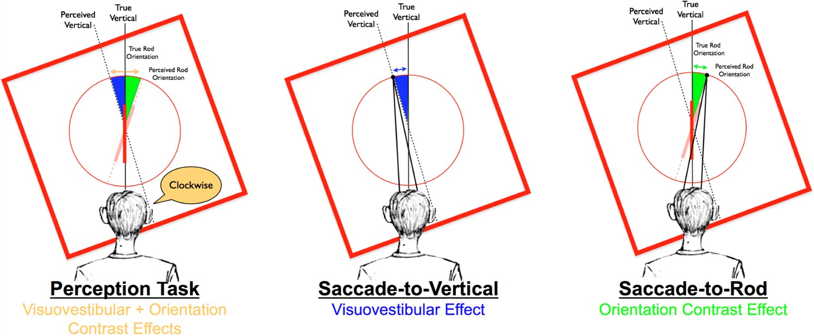
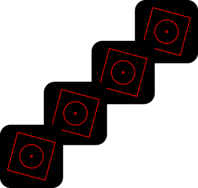
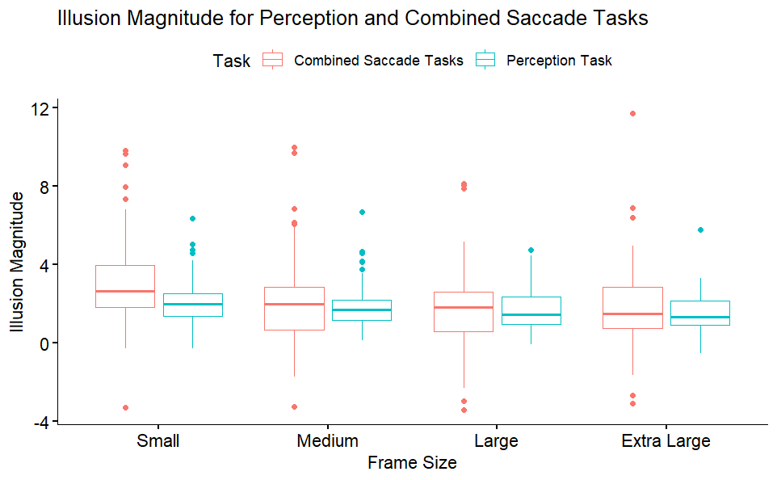
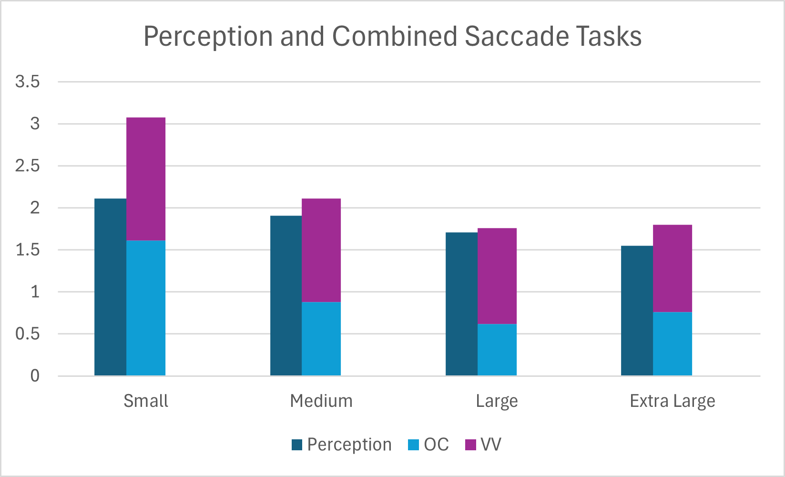
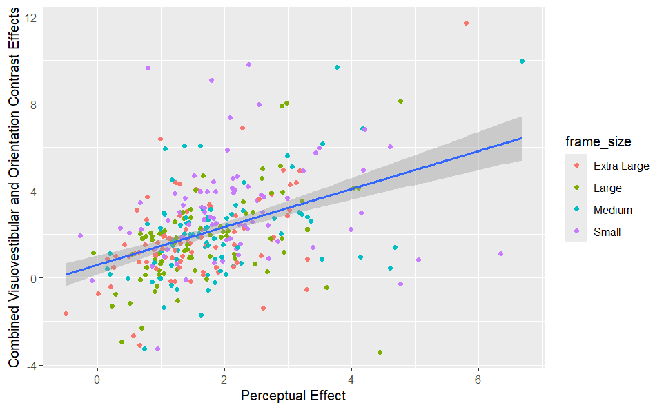
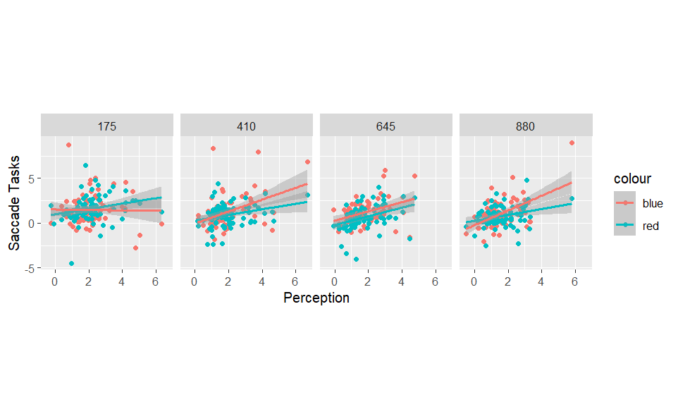

Quantifying the Visual Mechanisms of the Rod-and-Frame Illusion
Ernestine Brannon1, Paul Dassonville1
1 Psychology Department, University of Oregon
Introduction
Our ability to judge the orientation of an object is dependent on the effects of context at multiple levels of processing. In early visual processing, orientation contrast effects can enhance the perceived disparities between edges in the object and surround. In later stages of processing, visuovestibular cues in the environment (edges of window frames, doors, desktops, etc.) provide cues to gravitational vertical that inform the observer’s egocentric reference frame. A combination of these mechanisms is thought to underlie the rod-and-frame illusion (RFI), where the perceived orientation of a line is distorted in the presence of a surrounding, tilted frame.
Objectives
- Isolate and characterize the visual mechanisms that underly the rod-and-frame illusion.
- Compare the perceptual effect of the RFI to separate measures of the visuovestibular distortion and orientation contrast effects at different frame sizes.
Methods
 - The overall perceptual effect of the RFI - Visuovestibular distortions were measured in a task that had participants saccade from a fixation point to the “topmost point” on a surrounding response circle, which was itself surrounded by a tilted frame.
- Orientation contrast effects were measured by having participants saccade from a fixation point to the location where the rod of the RFI would intersect the surrounding response circle if it were extended upward.

Results
 


Conclusion
While the magnitude of the visuovestibular effect remained constant across frame sizes within the range tested here, the orientation contrast effect was greatest for the smallest frame. As predicted, the sum of the separately-measured visuovestibular and orientation contrast effects were found to approximate the overall perceptual effect of the illusion regardless of frame size, and this was true on average as well as when assessing individual differences. These findings support the hypothesis that perceived orientation is affected by both orientation contrast effects and visuovestibular distortions, and that the magnitudes of these effects can be separately quantified with these two saccade tasks.
Future Direction
Previous research has found that susceptibility to illusion like the RFI are correlated with autistic traits.These methods provide a way to separate the different components of the RFI which,enabling us to quantify the effect of autism on the specific mechanisms of the illusion,which may allow us to better understand how the perceptual systems are affected by autism